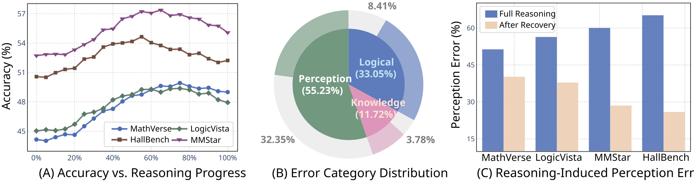
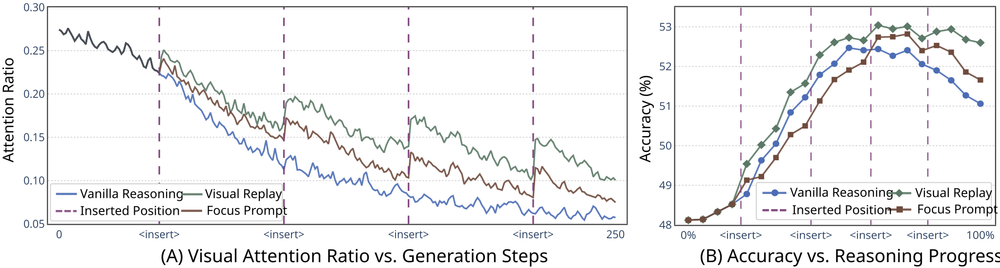
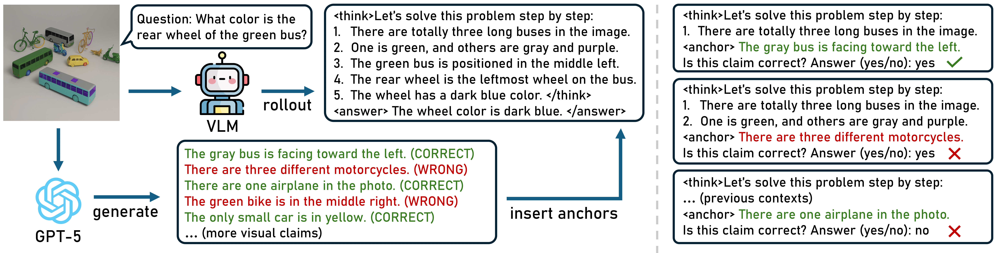
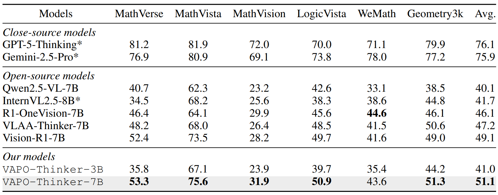
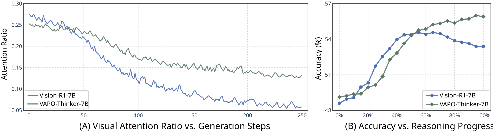

Abstract
Reasoning has emerged as a pivotal capability in Large Language Models (LLMs). Through Reinforcement Learning (RL), typically Group Relative Policy Optimization (GRPO), these models are able to solve complex tasks such as mathematics and code generation. Building on these advances, recent research has sought to extend reasoning to Vision-Language Models (VLMs), yielding promising results across diverse visual tasks. Despite this progress, our study uncovers an interesting dual nature: while multimodal reasoning substantially enhances logical inference and facilitates performance on challenging problems, it may gradually impair perceptual grounding, leading to recognition failures on otherwise basic visual questions. Through further analysis, we attribute this phenomenon to visual forgetting, wherein prolonged reasoning causes the model to increasingly disregard visual input. To address this, we propose Vision-Anchored Policy Optimization (VAPO), a simple yet effective method that explicitly steers the reasoning process toward visually grounded trajectories. Our result model, VAPO-Thinker-7B, significantly strengthens the model's reliance on visual information and achieves new state-of-the-art results on a wide range of established benchmarks.
The Dual Nature of Multimodal Reasoning

An increasing number of studies have explored the use of reasoning to improve the task performance of VLMs. However, few have taken a sober look at its inherent benefits and limitations. In this work, we investigate a core question: Is reasoning truly a consistent performance booster for vision-language models? To answer this, we conduct a systematic analysis and uncover three key findings:
- Longer reasoning does not guarantee better performance: By breaking down the reasoning chains, we observe that the early stages of reasoning significantly enhance model accuracy. However, as reasoning continues, this performance gain gradually saturates and may even begin to reverse in later stages.
- The harder the model thinks, the worse the model sees: Our error analysis reveals that prolonged reasoning is accompanied by an increase in perception errors, where the model incorrectly recognize or interpret visual details. This degradation in perceptual accuracy is a key factor underlying the negative effect of reasoning.
- The harms of reasoning are most evident in vision-heavy tasks: In contrast to tasks with simple visual structures such as math, the adverse impact of reasoning on perception becomes more pronounced in vision-intensive problems involving high-resolution real-world images or perceptually elusive content.
These findings suggest that multimodal reasoning exhibits a notable dual nature: while it enhances the model's logical inference ability, it simultaneously undermines basic visual perception. This trade-off constitutes a significant bottleneck constraining the full potential of reasoning in VLMs.
Side Effect of Multimodal Reasoning: Visual Forgetting

We attribute this perception degradation during reasoning to a phenomenon we term visual forgetting, where longer textual outputs lead the model to increasingly disregard visual information, resulting in fundamental perceptual errors. To validate this hypothesis, we introduce two simple inference-level remedies:
- Visual Replay: Instead of presenting the visual input only at the beginning, we reintroduce the image to models at regular intervals throughout the reasoning process.
- Focus Prompt: Similarly, at regular intervals, we explicitly prompt models to revisit the input image with instructions such as "I need to see the image" or "I have to look back".
Notably, both approaches trigger a sharp and immediate increase in visual attention ratio upon insertion. Moreover, this reinforcement of visual information alleviates the performance degradation during the reasoning process, showing that visual forgetting is the fundamental cause preventing reasoning from realizing its full potential.
Our Solution: Vision-Anchored Policy Optimization

We propose Vision-Anchored Policy Optimization (VAPO), a simple yet effective policy gradient algorithm as a multimodal replacement of GRPO that explicitly steers the reasoning process toward visually grounded trajectories. The key idea of VAPO is to embed a sequence of visual anchors along the reasoning path. At each anchor point, the model's perceptual capability is probed by evaluating its responses to a set of primitive visual claims. Beyond standard outcome-based rewards such as accuracy and format, we introduce perception reward, which quantifies the model's overall perceptual grounding during reasoning by aggregating scores across all anchor points.
Experimental Results

- VAPO consistently improves accuracy across diverse benchmarks: Our model outperforms recent reasoning models of the same scale on mathematical problems, achieving an average improvement of 2% (49.1% → 51.1%). The advantage is more pronounced on general-purpose tasks, where our method surpasses previous best results by 3.2% (59.9% → 63.1%), thereby establishing a new state of the art.

- VAPO fully releases the potentials of reasoning: Compared with the baseline, our model demonstrates a more gentle decline in visual attention ratio, indicating that VAPO effectively strengthens the contribution of visual cues to reasoning process. The benefit brought by this is directly reflected in accuracy, where in contrast to the baseline which exhibits a sharp performance decline, our method achieves steadily increasing accuracy.
BibTeX
@article{tian2025more,
title={More Thought, Less Accuracy? On the Dual Nature of Reasoning in Vision-Language Models},
author={Tian, Xinyu and Zou, Shu and Yang, Zhaoyuan and He, Mengqi and Waschkowski, Fabian and Wesemann, Lukas and Tu, Peter and Zhang, Jing},
journal={arXiv preprint arXiv:2509.25848},
year={2025}
}